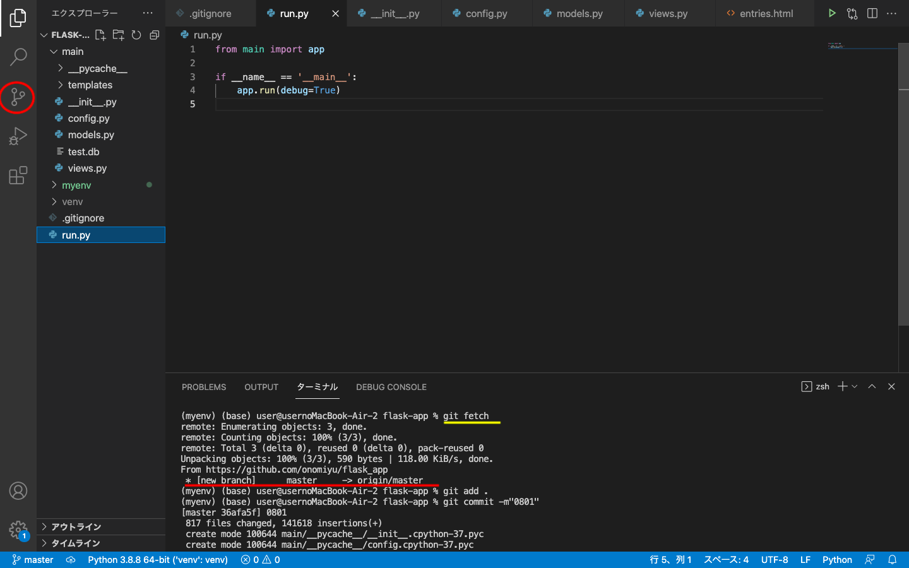

①GitHubにローカルリポジトリを作る。
作り方はこちらを参照してください。道用先生のGitHubについてのサイトです。②ローカルとリモートリポジトリをつなぐ。
リポジトリのcodeというところにあるURLをコピーする。ターミナルで下記を書く。
git remote add origin GitHubのリモートリポジトリURL
git config --global user.name "GitHubに登録しているユーザネーム"
git config --global user.email GitHubに登録しているメールアドレス
ちゃんと入ったかどうかは、下記で確認
これを入れると、GitHubに登録している内容が返ってくる git remote -v
git config user.name
git config user.email
③リモート先からローカル先にフェッチする（同期設定）
git fetch  これで、赤のラインの一行が出てきたらOK。 いったんここでGitHubに送る。git add .
git commit -m"日付-ナンバー"
git push そうすると、左の赤丸のところ似合った数字が消え、同期化成功。
問題発生
仮想空間の同期化が何度やってもできない。Repository を作り直してみてもできないので、もう少し試行錯誤してみる。